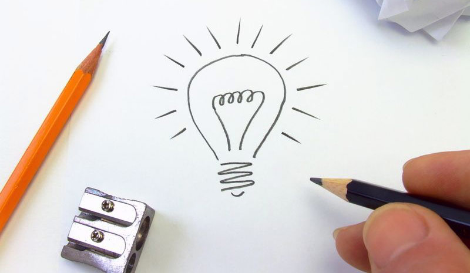

They Changed the World

Now, it's Your Turn.
Presenting...

Kiwi Inc.
We want YOU to design the next big thing
What if you could design a smartphone?
Introducing the new Kiwi Inc. uPhone, the first smartphone created by you, for you. Kiwi Inc. wants to bring you the next big thing in the smartphone industry but we would rather not be the only ones deciding the final product. Instead, we have created a design plan called “crowd sourced synergy” but we call it CSS for short.
A Phone for You by You
We wanted to gather the greatest designers, engineers and marketers to develop the uPhone for the public but we have a budget. We used the lowest common denominator, YOU, to tell us what we should and should not do for our new devices.
We Need You
With your contributions, we can create the T-1000 of smartphones, capable of annihilating Sarah Conner and the competition through a superior cybernetic endoskeleton, for drop resistance, wrapped in living tissue for added grip. We hope that you will give us the data required to prepare our flagship device for all scenarios that could potentially endanger the proliferation of all Kiwi Inc.